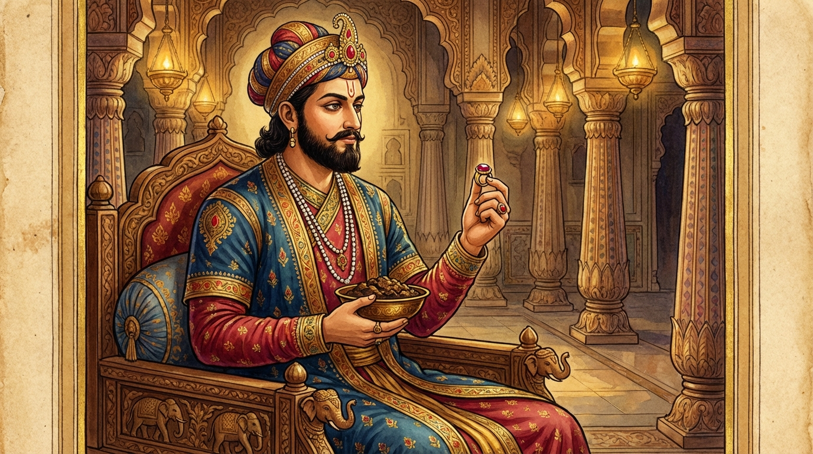

4. පුණ්ණනදී ජාතකය (214)
“පුණ්ණං නදිං” යන මේ ජාතක කතාව බුදුරජාණන් වහන්සේ ජේතවනාරාමයෙහි වැඩ වාසය කරන සමයෙහි ප්රඥා පාරමිතාව අරබයා දේශනා කරන ලද්දකි. එක් දිනක් ධර්ම සභා මණ්ඩපයට රැස්වූ භික්ෂූන් වහන්සේලා තථාගතයන් වහන්සේගේ ප්රඥාව පිළිබඳව කතා කරමින්, “ඇවැත්නි, සම්මා සම්බුදුරජාණන් වහන්සේ:
- මහා ප්රඥා ඇත්තාහ,
- පුථු (පෘථුල) ප්රඥා ඇත්තාහ,
- හාස (සිනා උපදවන/සතුටු කරවන) ප්රඥා ඇත්තාහ,
- ජවන (වේගවත්) ප්රඥා ඇත්තාහ,
- තීක්ෂ්ණ (තියුණු) ප්රඥා ඇත්තාහ,
- නිබ්බේධික (විනිවිද දකින) ප්රඥා ඇත්තාහ,
- උපාය ප්රඥාවෙන් යුක්ත වූ සේකැ”යි කථාවක් මතු කළහ.
බුදුරජාණන් වහන්සේ එහි වැඩම කොට, “මහණෙනි, කවර කථාවකින් යුක්තව දැන් මෙහි හුන්නාහු ද?” යි විමසා, “මේ නම් කථාවෙනැ”යි පැවසූ කල්හි, “මහණෙනි, දැන් පමණක් නොව තථාගතයන් වහන්සේ පෙරත් ප්රඥාවෙන් හා උපාය කුසලතාවයෙන් යුතුව සිටියාහු ය”යි වදාරා අතීත කථාව ගෙනහැර දැක්වූ සේක.
අතීතයෙහි බරණැස් නුවර බ්රහ්මදත්ත රජු රාජ්ය කරන කල්හි බෝධිසත්වයන් වහන්සේ පුරෝහිත බමුණු කුලයෙහි ඉපදී, වැඩිවියට පත්ව තක්සලා නුවරින් සියලු ශිල්ප ඉගෙන, පියාගේ ඇවෑමෙන් පුරෝහිත තනතුර ලබා බරණැස් රජුට අර්ථයෙන් ධර්මයෙන් අනුශාසනා කරන්නා වූහ. පසුකලෙක රජතුමා කේලම් කියන්නන්ගේ බස් පිළිගෙන කිපී, “මගේ සමීපයෙහි නොවසව” යි පවසා බෝධිසත්වයන් වහන්සේ බරණැස් නුවරින් පිටමං කළේය. බෝධිසත්වයන් වහන්සේ සිය අඹුදරුවන් රැගෙන කාසි රට එක්තරා ගමක වාසය කළහ. පසුකලෙක රජතුමාට ඔහුගේ ගුණ සිහිපත් වී, “යමෙකු යවා මගේ ආචාර්යවරයා කැඳවා ගැනීම යුතු නොවෙයි. එබැවින් එක් ගාථාවක් රචනා කොට, ලිපියක් ලියා, කපුටු මස් පිසවා, ඒ ලියමන ද කපුටු මස් ද සුදු වස්ත්රයකින් ඔතා, රාජ මුද්රාව තබා යවන්නෙමි. ඉදින් ඔහු නුවණ ඇත්තෙක් නම් ලිපිය කියවා මෙය කපුටු මස් බව දැන එන්නේය. ඉදින් නොඑන්නේ නම් (නුවණ නැත්තෙකැයි සිතා ගෙන්වා නොගනිමි)” යැයි සිතා,
“පුණ්ණං නදිං යෙන ච පෙය්යමාහු,
ජාතං යවං යෙන ච ගුය්හමාහු;
දූරං ගතං යෙන ච අව්හයන්ති,
සො ත්යාගතො හන්ද ච භුඤ්ජ බ්රාහ්මණා”ති.
යන මේ ගාථාව ලීවේය.
“පිරුණා වූ නදිය යමෙකු විසින් පානය කළ යුතු යයි කියද්ද, වැඩුණා වූ යව (සස්යයන්) යමෙකු විසින් (තමා) සැඟවීමට සුදුසු යයි කියද්ද, දුර ගිය ප්රියයකු පැමිණීම යමෙකු කරණකොටගෙන (ශබ්ද කිරීමෙන්) කියද්ද, බ්රාහ්මණය, ඔහු (හෙවත් කපුටා) තොපට ගෙනෙන ලදි. එබැවින් අනුභව කරව.”
පිරුණු ගඟෙහි දිය බොන තැනැත්තා ද, වැඩුණු ගොයම් ඇතුළට වී සැඟවෙන තැනැත්තා ද, දුර ගිය හිතවතෙකු පැමිණෙන බව කියන තැනැත්තා ද කවරෙක් ද, ඔහු (හෙවත් කපුටා, එනම් කපුටු මස්) ඔබට ගෙනෙන ලදි. බමුණ, එහෙයින් මෙය අනුභව කරන්න.
එහි, පුණ්ණං නදිං යෙන ච පෙය්යමාහු යනු, “කපුටෙකුට දිය බීමට සුදුසු නදිය (කාකපෙය්ය) ගැන කියමින්, යමෙකු විසින් පිරුණු නදිය පානය කළ යුතු ය”යි කීවේ ද යන්නයි. නොපිරුණු ගඟ කාක්කෙකුට දිය බීමට සුදුසු නදිය යයි නොකියනු ලැබේ. ගං ඉවුරෙහි සිට බෙල්ල දිගු කොට කපුටෙකුට දිය බීමට හැකි නම්, එපමණට දිය පිරුණු නදියට ‘කාකපෙය්ය’ හෙවත් කපුටෙකුට දිය බීමට සුදුසු නදිය යයි කියති. ජාතං යවං යෙන ච ගුය්හමාහු යන මෙහි ‘යව’ යනු දේශනා ශීර්ෂයක් පමණි. මෙහි (‘යව’ නමැති ධාන්ය වර්ගය පමණක් නොව) පැලවී හොඳින් වැඩුණු සියලුම ධාන්ය වර්ගවලට අයත් ගස් හෝ පඳුරු අදහස් කරන ලදි. පඳුරු අතරට කපුටෙකු ඇතුළු වූ විට ඌ නොපෙනෙන ලෙස වසා ගැනීමට හැකි වන තරමට පඳුරු වැඩී ඇත්නම්, එවිට සඟවයි යන අර්ථයෙන් ‘ගුය්හ’ යයි කියනු ලැබේ. කුමක් සඟවයි ද? කපුටා සඟවයි. මෙසේ කපුටාගේ සැඟවීම ‘කාකගුය්හ’ (කාක් සැඟවීම) නම් වේ. මෙසේ කියමින් කපුටා විසින් සඟවන වචනයට කරුණු වශයෙන් ‘ගුය්හ’ යයි කියති. එහෙයින් යෙන ච ගුය්හමාහු යයි කියන ලදි. දූරං ගතං යෙන ච අව්හයන්ති යනු දුර ගිය හෙවත් වෙන්ව වාසය කළ යම් ප්රිය පුද්ගලයකු පැමිණ (සැඟවී) සිටිනු දැක, (දකින පුද්ගලයා) කපුටා අමතා, “කපුට! අසවලා එන්නේ නම් හඬලන්නැ”යි කියා කියයි. ඒ කපුටු හඬ අසා හෝ “අසවලා එන්නේ ය”යි කියා කපුටා හඬලයි ද, මෙසේ කියමින් යමෙකු විසින් (පැමිණියේ හෝ පැමිණෙන අය හෝ) කැඳවත් ද, කථා කරත් ද, මන්ත්රණය කරත් ද යන අර්ථයයි. සො ත්යාගතො යනු ඔහු (කපුටා) විසින් කැඳවන ලද ඒ පුද්ගලයා (රජතුමා විසින් එවන ලද කපුටු මස්) ය. හන්ද ච භුඤ්ජ බ්රාහ්මණ යනු “බමුණ මෙය ගන්න, අනුභව කරන්න, මේ කපුටු මස් කන්න” යන අර්ථයයි.
මෙසේ රජතුමා මේ ගාථාව කොළයක ලියා බෝධිසත්වයන් වහන්සේට යැව්වේය. හෙතෙම ලිපිය කියවා, “රජතුමා මා දකිනු කැමැත්තේ ය”යි දැන,

“යතො මං සරතී රාජා,
වායසම්පි පහෙතවෙ;
හංසා කොඤ්චා මයූරා ච,
අසතීයෙව පාපියා”ති.
යන දෙවන ගාථාව කීවේය.
“රජ තෙමේ කවුඩු මසක්වත් එවනු පිණිස යම් කලෙක මා සිහි කරයි ද, (එසේ නම්) හංසයෝ, කොස්වාලිහිණියෝ, මොණරු යන මොවුන් (ආහාර පිණිස) ලද කල්හි කිම සිහි නොකෙරේ ද? (අනිවාර්යයෙන්ම සිහි කරයි). එසේ සිහි නොකිරීම ම ලාමක ය.”
එහි, යතො මං සරතී රාජා වායසම්පි පහෙතවෙ යනු යම් කලෙක කවුඩු මස් ලැබ හෝ ඒවා එවන්නට රජතුමා මා සිහි කරයි ද යන්නයි. හංසා කොඤ්චා මයූරා ච යනු යම් කලෙක මොහුට හංස ආදීහු පිළිගන්වන්නේ නම්, ඒ හංස මස් ආදිය ලබන්නේ නම්, එකල්හි කුමක් නිසා මා සිහි නොකරන්නේ ද? යන අර්ථයි. අටුවාවෙහි වනාහි, හංස කොඤ්ච මයූරානං යන පාඨය ඇත. ඒ පාඨය වඩා සුදුසුය. මේ හංසාදීන්ගේ මස් ලැබ කුමක් නිසා මා සිහි නොකරන්නෝ ද යනු එහි අර්ථයයි. අසතීයෙව පාපියා යනු යම්කිසිවක් ලැබ සිහිපත් කිරීම නම් යහපත් ය. ලොවෙහි අමතක කිරීම ම පවකි. අමතක කිරීම ම හීන ලාමක දෙයකි. එය ද අපගේ රජතුමාට නැත. රජතුමා මා සිහි කරයි. මගේ පැමිණීම බලාපොරොත්තු වෙයි. ඒ නිසා යන්නෙමි”යි සිතා යානයක් යොදවාගෙන ගොස් රජතුමා බැහැදුටුවේය. රජතුමා සතුටු වී ඔහුව පුරෝහිත තනතුරෙහි ම පිහිටෙව්වේය.
බුදුරජාණන් වහන්සේ මේ ධර්ම දේශනාව ගෙනහැර දක්වා ජාතක කථාව නිමවා වදාළ සේක. “එකල රජතුමා වූයේ දැන් මේ ආනන්ද තෙරුන් ය. පුරෝහිත බමුණා වූයේ මම ම වෙමි”යි වදාළ සේක.
සිව්වන පුණ්ණනදී ජාතක වර්ණනාවයි.